3º Laboratório de Modelação e Simulação 2019/20
Dinâmica de um metrónomo básica
Alice Rosa, nº 90007
Beatriz Pereira, nº 90029
Grupo 16, Turno 3ª feira às 09h00
Contents
Pergunta 5
Para esta questão foi desenvolvido o seguinte esquema em Simulink para simular as equações de estado obtidas em 2):
open('sim5');
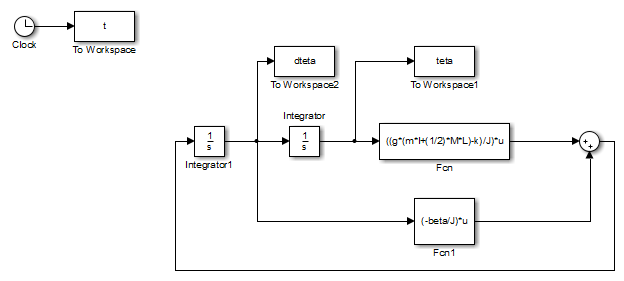 %Parâmetros L=0.5; M=0.15; l=0.4; m=0.2; k=3; beta=0.1; g=9.8; J=(m*l^2)+(M/3)*L^2; dteta_inicial=pi/4; teta_inicial=0; sim('sim5',8); figure; plot(t,teta); xlabel('t [s]'); ylabel('\theta'); title('Posição'); set(gca,'fontsize',12); figure; plot(t,dteta); xlabel('t [s]'); ylabel('$\dot \theta$','interpreter','latex'); title('Velocidade Angular'); set(gca,'fontsize',12); figure; plot(teta,dteta); xlabel('\theta'); ylabel('$\dot \theta$','interpreter','latex'); title('Espaço de estados'); set(gca,'fontsize',12);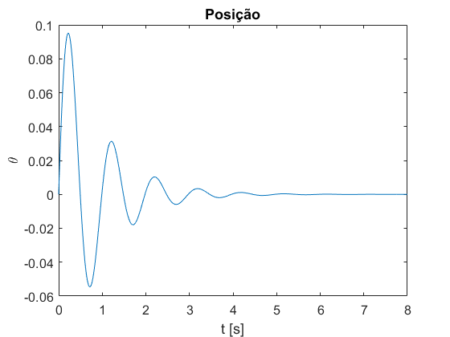 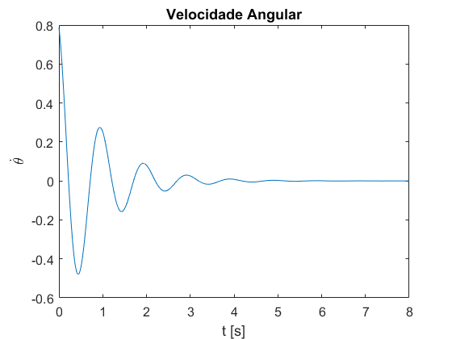 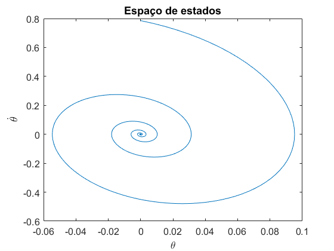
Os gráficos obtidos correspondem ao esperado, para as condições iniciais de posição, 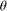 é 0 e a velocidade angular do braço inicial é 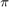/4. Com atrito associado ao sistema e nenhum binário aplicado, passado algum tempo a posição e velocidade do braço tendem para 0.
Pergunta 6
Nesta questão foi modificado o diagrama anterior por forma a utilizar o bloco 'State-Space'. Neste define-se as matrizes A,B,C e D apresentadas como comentário no código.
open('sim6');
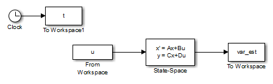 clear close all L=0.5; M=0.15; l=0.4; m=0.2; k=3; beta=0.1; g=9.8; J=(m*l^2)+(M/3)*L^2; %Momento de inércia dteta_inicial=pi/4; teta_inicial=0; u=[0 0]; %Binário externo % A=[0 1; ((g*(m*l+(1/2)*M*L)-k)/J) -(beta/J)]; % B=[0; 1/J]; % C=[1 0; 0 1]; % D=[0; 0]; sim('sim6',8); teta=var_est(:,1); dteta=var_est(:,2); figure; plot(teta,dteta); xlabel('\theta'); ylabel('$\dot \theta$','interpreter','latex'); title('Espaço de estados'); set(gca,'fontsize',14);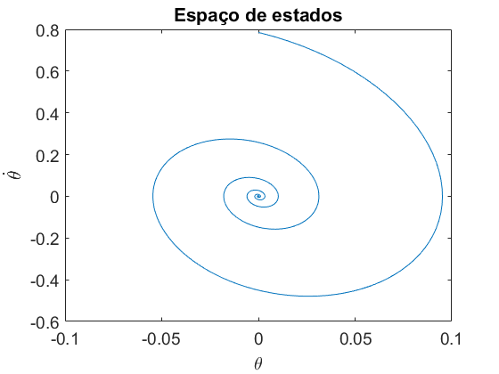
O bloco C foi modificado de forma a termos à saída do bloco tanto o ângulo de deflexão , como a velocidade angular do braço, logo, em vez da matriz ser C=[1 0], esta vai ser igual à matriz identidade, assim y=[ 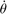 ]'. De modo a confirmar a simulação, obteve-se o gráfico do espaço de estados e verficou-se que é igual ao obtido anteriormente.
Pergunta 7
clear close all L=0.5; M=0.15; l=0.4; m=0.2; k=3; g=9.8; J=(m*l^2)+(M/3)*L^2; dteta_inicial=pi/4; teta_inicial=0; u=[0 0]; beta_set=[0 1]; for i=1:length(beta_set) beta=beta_set(i); sim('sim6',8); teta=var_est(:,1); dteta=var_est(:,2); figure; plot(t,teta); xlabel('t [s]'); ylabel('\theta'); title('Posição'); legend(sprintf('\\beta=%.2f Nms/rad',beta)); set(gca,'fontsize',12); figure; plot(t,dteta); xlabel('t [s]'); ylabel('$\dot \theta$','interpreter','latex'); title('Velocidade Angular'); legend(sprintf('\\beta=%.2f Nms/rad',beta)); set(gca,'fontsize',12); figure; plot(teta,dteta); xlabel('\theta'); ylabel('$\dot \theta$','interpreter','latex'); title('Espaço de estados'); set(gca,'fontsize',12); end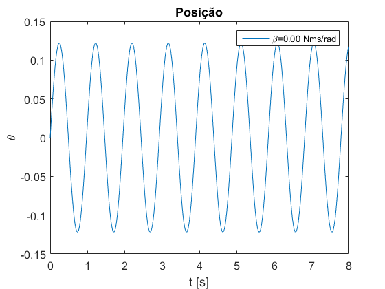 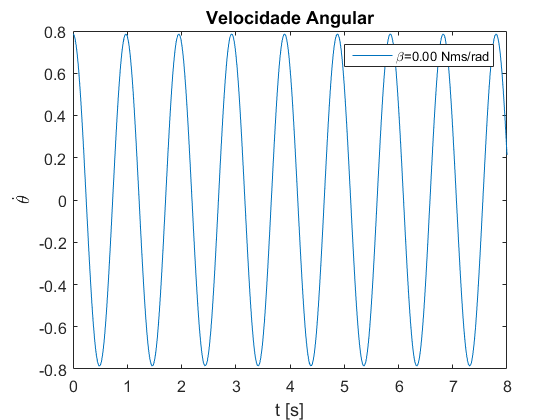 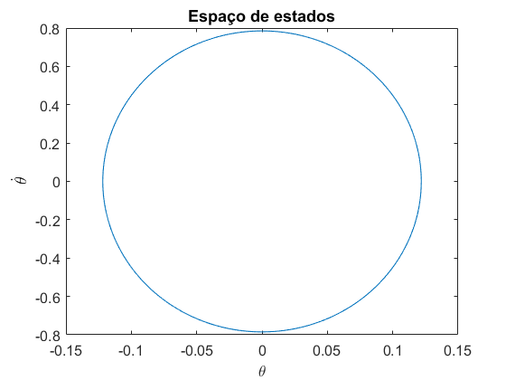 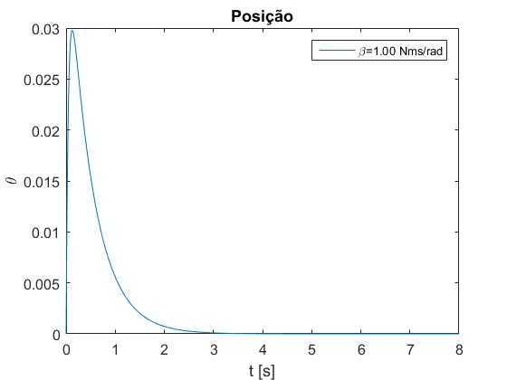 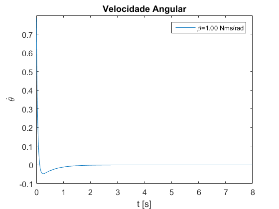 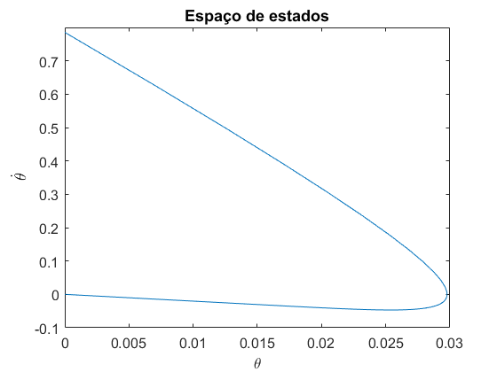
Como era de esperar para 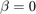, não há atrito a contrariar o movimento do braço, logo este fica a oscilar indeterminadamente e a curva representativa do espaço de estado das variáveis é uma circunferência. Enquanto que para 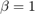, tem-se 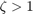, ou seja, o sistema está sobreamortecido. Por esta razão, este não chega a oscilar, como podemos observar nos gráficos em função do tempo, e a posição final da curva no espaço de estados é a origem.
Simulou-se o sistema para 4 conjuntos de condições iniciais, em diferentes quadrantes e diferentes amplitudes e obteve-se as respectivas curvas representativas do espaço de estado das variáveis. Sobrepôs-se a estes gráficos o campo de vectores que define a equação diferencial e que indica a direção seguida pelas trajectórias de estado em cada ponto.
close all beta=0; teta_inicial_set=[pi/2 -pi/3 -pi/4 pi/6]; dteta_inicial_set=[pi/2 pi/3 -pi/4 -pi/6]; x1=linspace(-2,2,25); x2=linspace(-12,12,25); [x1,x2] = meshgrid(x1,x2); dx1=x2; dx2=((g*(m*l+(1/2)*M*L)-k)/J)*x1 -(beta/J)*x2; figure(1); quiver(x1,x2,dx1,dx2); hold on; for i=1:length(dteta_inicial_set) teta_inicial=teta_inicial_set(i); dteta_inicial=dteta_inicial_set(i); sim('sim6'); teta=var_est(:,1); dteta=var_est(:,2); figure(1); p(i)=plot(teta,dteta); hold on; end figure(1); xlabel('\theta'); ylabel('$\dot \theta$','interpreter','latex'); title('Espaço de estados para \beta=0 Nms/rad'); lg=legend([p(1) p(2) p(3) p(4)],'(\pi/2,\pi/2)',... '(-\pi/3,\pi/3)',... '(-\pi/4,-\pi/4)','(\pi/6,-\pi/6)','Orientation','horizontal'); set(gca,'fontsize',12); xlim([-2 2]); ylim([-14 14]); set(lg,'fontsize',9);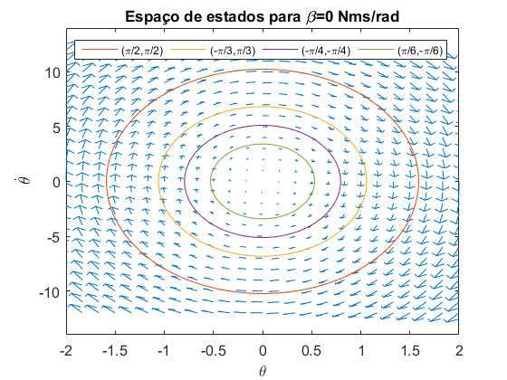
close all beta=0.1; teta_inicial_set=[pi/2 -pi/3 -pi/4 pi/6]; dteta_inicial_set=[pi/2 pi/3 -pi/4 -pi/6]; x1=linspace(-2,2,25); x2=linspace(-10,10,25); [x1,x2] = meshgrid(x1,x2); dx1=x2; dx2=((g*(m*l+(1/2)*M*L)-k)/J)*x1 -(beta/J)*x2; figure(1); quiver(x1,x2,dx1,dx2); hold on; for i=1:length(dteta_inicial_set) teta_inicial=teta_inicial_set(i); dteta_inicial=dteta_inicial_set(i); sim('sim6'); teta=var_est(:,1); dteta=var_est(:,2); figure(1); p(i)=plot(teta,dteta); hold on; end figure(1); xlabel('\theta'); ylabel('$\dot \theta$','interpreter','latex'); title('Espaço de estados para \beta=0.1 Nms/rad'); set(gca,'fontsize',12); xlim([-2 2]); ylim([-10 10]); lg=legend([p(1) p(2) p(3) p(4)],'(\pi/2,\pi/2)','(-\pi/3,\pi/3)',... '(-\pi/4,-\pi/4)','(\pi/6,-\pi/6)','Orientation','horizontal'); set(lg,'fontsize',9)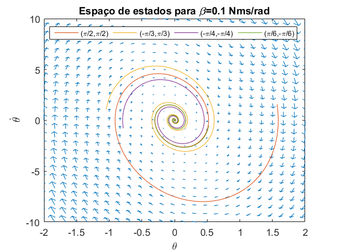
close all beta=1; teta_inicial_set=[pi/2 -pi/3 -pi/4 pi/6]; dteta_inicial_set=[pi/2 pi/3 -pi/4 -pi/6]; x1=linspace(-2,2,25); x2=linspace(-5,5,25); [x1,x2] = meshgrid(x1,x2); dx1=x2; dx2=((g*(m*l+(1/2)*M*L)-k)/J)*x1 -(beta/J)*x2; figure(1); quiver(x1,x2,dx1,dx2); hold on; for i=1:length(dteta_inicial_set) teta_inicial=teta_inicial_set(i); dteta_inicial=dteta_inicial_set(i); sim('sim6'); teta=var_est(:,1); dteta=var_est(:,2); figure(1); p(i)=plot(teta,dteta); hold on; end figure(1); xlabel('\theta'); ylabel('$\dot \theta$','interpreter','latex'); title('Espaço de estados para \beta=1 Nms/rad'); set(gca,'fontsize',12); xlim([-2 2]); lg=legend([p(1) p(2) p(3) p(4)],'(\pi/2,\pi/2)','(-\pi/3,\pi/3)',... '(-\pi/4,-\pi/4)','(\pi/6,-\pi/6)','Orientation','horizontal'); set(lg,'fontsize',9)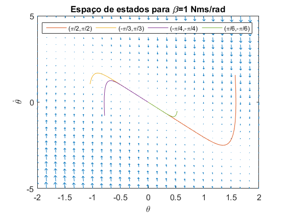
L=0.5; M=0.15; l=0.4; m=0.2; k=3; g=9.8; J=(m*l^2)+(M/3)*L^2; for beta=[0 0.1 1] A=[0 1; ((g*(m*l+(1/2)*M*L)-k)/J) -(beta/J)]; Valores_proprios=eig(A); [Vectores_proprios,~] = eig(A); display(beta); display(Valores_proprios); display(Vectores_proprios); end
beta =
0
Valores_proprios =
0.0000 + 6.4451i
0.0000 - 6.4451i
Vectores_proprios =
0.0000 - 0.1533i 0.0000 + 0.1533i
0.9882 + 0.0000i 0.9882 + 0.0000i
beta =
0.1000
Valores_proprios =
-1.1236 + 6.3464i
-1.1236 - 6.3464i
Vectores_proprios =
-0.0267 - 0.1510i -0.0267 + 0.1510i
0.9882 + 0.0000i 0.9882 + 0.0000i
beta =
1
Valores_proprios =
-2.0323
-20.4396
Vectores_proprios =
0.4415 -0.0489
-0.8973 0.9988
- Para Nms/rad, os valores próprios são imaginários puros e os gráficos obtidos são circunferências centradas na origem cujo raio depende apenas da amplitude das condições iniciais. Esta dinâmica ocorre quando os pólos do sistema estão situados no eixo imaginário e, uma vez que pólos=Valores próprios da matriz A, confirma-se os resultados obtidos.
- Para 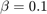 Nms/rad, os gráficos obtidos são espiras que se iniciam no ponto correspondente às condições iniciais e terminam na origem. Esta dinâmica ocorre quando os pólos do sistema estão situados no semi-plano complexo esquerdo, verificado pela parte real dos valores próprios.
- Para Nms/rad, todas as curvas têm início nas suas condições iniciais e evoluem até chegar a um ponto em que se deslocam linearmente para a origem. Esta dinâmica ocorre quando os pólos do sistema estão situados no eixo real do semi-plano complexo esquerdo, como confirmado pelos valores próprios obtidos.
Pergunta 8
clear close all L=0.5; M=0.15; l=0.4; m=0.2; k=3; beta=0.1; g=9.8; J=(m*l^2)+(M/3)*L^2; u=[0 0]; beta=1; teta_inicial_set=[-0.0489 0.4415]; dteta_inicial_set=[0.9900 -0.8973]; for i=1:length(dteta_inicial_set) teta_inicial=teta_inicial_set(i); dteta_inicial=dteta_inicial_set(i); sim('sim6'); teta=var_est(:,1); dteta=var_est(:,2); figure(1); plot(teta,dteta,'LineWidth',1); hold on; end figure(1); xlabel('\theta'); ylabel('$\dot \theta$','interpreter','latex'); title('Espaço de estados'); set(gca,'fontsize',12); legend(sprintf('(%.3f,%.3f)',teta_inicial_set(1),dteta_inicial_set(1)),... sprintf('(%.3f,%.3f)',teta_inicial_set(2),dteta_inicial_set(2))); xlim([-2 2]);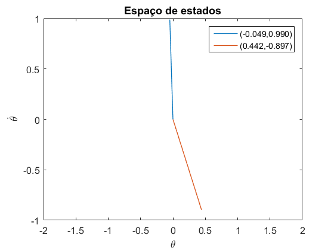
A escolha dos dois conjuntos de condições iniciais é indicada no documento 'QuestoesTeoricas-Lab3-Grupo16.pdf'. O gráfico obtido serve de confirmação dessa escolha.
Pergunta 9
Para esta questão criaram-se três funções, a primeira 'freq_to_bpm' apenas converte a frequência de oscilação obtida em BPM.
A segunda, denominada 'calc_media_BPM' é utilizada para calcular uma média das frequências medidas entre os vários picos do sinal, de forma a diminuir o erro.
A terceira, denominada 'parametros_estimados' é a utilizada para a estimativa de m, l1 (comprimento de l que permite obter no metrónomo a cadência de 53 BPM) e l2 (cadência de 141 BPM).
A descrição da estratégia de dimensionamento é indicada no documento 'QuestoesTeoricas-Lab3-Grupo16.pdf'. No entanto, é importante referir que foi feita a aproximação 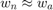, pois 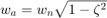 e para valores de 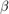 baixos 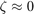.
type('freq_to_bpm.m');
function BPM=freq_to_bpm(wn) f_osc=wn/(2*pi); f_bat=2*f_osc; BPM=60*f_bat; end
type('calc_media_BPM');
function media_BPM=calc_media_BPM(t,locs,ind_inicial)
k=1;
for i=ind_inicial:(length(locs)-1)
f_osc=1/(t(locs(i+1))-t(locs(i)));
BPM(k)=60*(2*f_osc);
k=k+1;
end
media_BPM=mean(BPM);
end
type('parametros_estimados.m');
function [BPM_obt,ind_r,l,m]=parametros_estimados(BPM,valor_esperado,m_set,l_set)
[r,c] = size(BPM);
erro_min=50;
for i=1:r
for j=1:c
if isnan(BPM(i,j)) %Se o valor de BPM não é válido continua
continue;
end
%Erro entre a frequência pretendida e a medida para o par (m,l)
erro=abs(BPM(i,j)-valor_esperado);
%Guardar os indíces que levam ao erro mínimo
if erro<erro_min
ind_r=i;
ind_c=j;
BPM_obt=BPM(i,j);
erro_min=erro;
end
end
end
m=m_set(ind_r);
l=l_set(ind_c);
end
clear close all L=0.25; M=0.1; k=0.35; g=9.8; beta=0.001; m_set=linspace(0,0.1,200); %valores de m l_set=linspace(0.05,0.25,200); %valores de l for i=1:length(m_set) m=m_set(i); for j=1:length(l_set) l=l_set(j); J=(m*l^2)+(M/3)*L^2; if (k-g*(m*l+(1/2)*M*L))/J<0 BPM(i,j)=NaN; continue; end %Cálculo da frequência natural das oscilações amortecidas wn=sqrt((k-g*(m*l+(1/2)*M*L))/J); %Cálculo da frequência em BPM BPM(i,j)=freq_to_bpm(wn); end end %Variação da frequêcia com a massa e o comprimento l figure(1); surfc(m_set,l_set,BPM); shading interp; view(130, 30); ylabel('l [m]'); xlabel('m [Kg]'); zlabel('Frequência [BPM]'); %Cálculos de m,l1 e l2 [BPM1,ind_r,l1,m_est]=parametros_estimados(BPM,53,m_set,l_set); [BPM2,~,l2,~]=parametros_estimados(BPM(ind_r,:),141,m_set,l_set); % (m,l1) dteta_inicial=0; teta_inicial=pi/4; u=[0 0]; m=m_est; l=l1; J=(m*l^2)+(M/3)*L^2; sim('sim6',25); teta=var_est(:,1); [~,locs] = findpeaks(teta); ind_inicial=1; media_BPM1=calc_media_BPM(t,locs,ind_inicial); %Envolvente wn=sqrt((k-g*(m*l+(1/2)*M*L))/J); zeta=beta/(2*J*wn); env=(pi/4)*exp(-zeta*wn*t); %Plot para 53 BPM figure(2); plot(t,teta,t,env,'r',t,-env,'r'); xlabel('t [s]'); ylabel('\theta'); title('Posição em função do tempo '); set(gca,'fontsize',12); legend(sprintf('\\theta(t) - %.2f BPM',media_BPM1),'Envolvente Teórica'); % (m,l2) l=l2; J=(m*l^2)+(M/3)*L^2; sim('sim6',25); teta=var_est(:,1); [~,locs] = findpeaks(teta); ind_inicial=1; media_BPM2=calc_media_BPM(t,locs,ind_inicial); %Envolvente wn=sqrt((k-g*(m*l+(1/2)*M*L))/J); zeta=beta/(2*J*wn); env=(pi/4)*exp(-zeta*wn*t); %Plot para 141 BPM figure(3); plot(t,teta,t,env,'r',t,-env,'r'); xlabel('t [s]'); ylabel('\theta'); title('Posição em função do tempo '); set(gca,'fontsize',12); legend(sprintf('\\theta(t) - %.2f BPM',media_BPM2),'Envolvente Teórica'); %Dimensionamento fprintf('m estimado: %.4f\n',m_est); fprintf('l1 estimado: %.4f\n',l1); fprintf('Frequência em BPM obtida: %.2f\n',media_BPM1); fprintf('l2 estimado: %.4f\n',l2); fprintf('Frequência em BPM obtida: %.2f\n',media_BPM2);
m estimado: 0.0799 l1 estimado: 0.2289 Frequência em BPM obtida: 52.98 l2 estimado: 0.0952 Frequência em BPM obtida: 140.88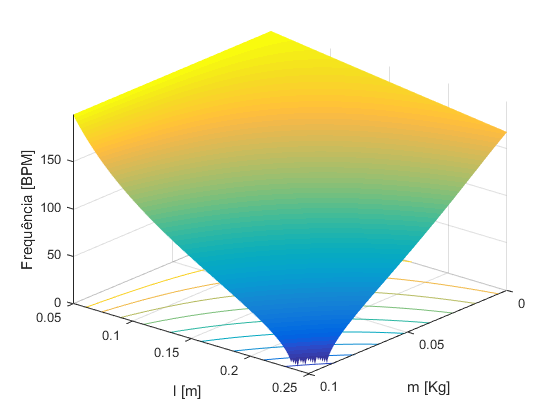 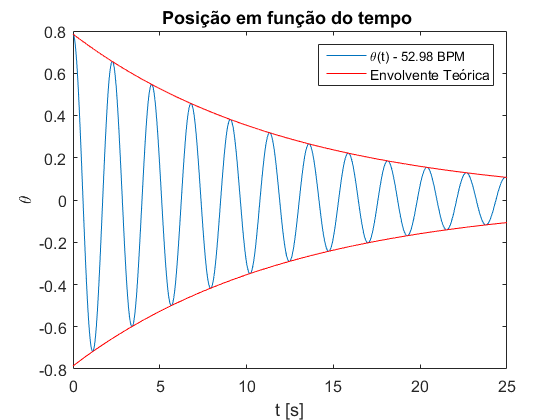 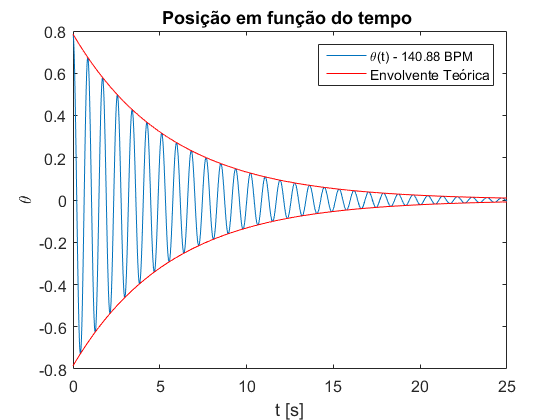
A envolvente obtida adequa-se bem aos gráficos obtidos. Obteve-se, aproximadamente, a frequência pretendida para as duas cadências o que confirma a validade da estratégia utilizada.
Pergunta 10
Para esta questão foi desenvolvido o seguinte esquema em Simulink para simular o modelo não linear do metrónomo:
open('sim10');
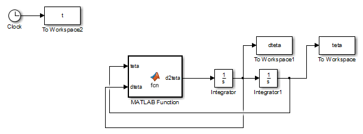 Em que o bloco 'MATLAB Function' apresenta o seguinte código:
type('fcn.m');
function d2teta = fcn(teta,dteta, T, m, l, M, L, g, k, beta) %#codegen J=(m*l^2)+(M/3)*L^2; d2teta =(1/J)*(-k*teta*(1+(teta^2/100))-beta*dteta+g*sin(teta)*(m*l+(1/2)*M*L)+T);
Foram criadas duas funções para se utilizar na função fminsearch, de forma a encontrar-se o parâmetro l que diminui o erro=BPM pretendido-BPM simulado, sem ter de se utilizar uma procura extensiva.
A função que obtém o comprimento l que permite ter no metrónomo a cadência de 53 BPM é:
type('calc_erro_l1.m');
function y=calc_erro_l1(x)
% Defenir novo workspace de simulação
options = simset('SrcWorkspace','current');
%Parâmetros
L=0.25;
M=0.1;
k=0.35;
g=9.8;
beta=0.001;
dteta_inicial=0;
teta_inicial=pi/4;
T=0;
m=0.0799;
l=x;
sim('sim10',40,options);
[~,locs] = findpeaks(teta);
ind_inicial=10;
media_BPM=calc_media_BPM(t,locs,ind_inicial);
y=abs(53-media_BPM);
end
A função que obtém o comprimento l que permite ter no metrónomo a cadência de 141 BPM é:
type('calc_erro_l2.m');
function y=calc_erro_l2(x)
options = simset('SrcWorkspace','current');
L=0.25;
M=0.1;
k=0.35;
g=9.8;
beta=0.001;
dteta_inicial=0;
teta_inicial=pi/4;
T=0;
m=0.0799;
l=x;
sim('sim10',40,options);
[~,locs] = findpeaks(teta);
ind_inicial=10;
media_BPM=calc_media_BPM(t,locs,ind_inicial);
y=abs(141-media_BPM);
end
clear close all L=0.25; M=0.1; k=0.35; g=9.8; beta=0.001; dteta_inicial=0; teta_inicial=pi/4; T=0; m=0.0799; l=0.2289; sim('sim10',40); [~,locs] = findpeaks(teta); %inicia-se a média no indíce 10 para dar tempo ao transitório de se %extinguir ind_inicial=10; media_BPM1=calc_media_BPM(t,locs,ind_inicial); desvio_freq_1=abs(53-media_BPM1); display(desvio_freq_1) % (m,l2) l=0.0952; sim('sim10',40); [~,locs] = findpeaks(teta); ind_inicial=10; media_BPM2=calc_media_BPM(t,locs,ind_inicial); desvio_freq_2=abs(141-media_BPM2); display(desvio_freq_2) % Refinamento do dimensionamento %l1 l1=0.2289; xo=l1; fun=@calc_erro_l1; [l1_est,erro]=fminsearch(fun,xo); display(erro) display(l1_est) %l2 l2=0.0952; xo=l2; fun=@calc_erro_l2; [l2_est,erro]=fminsearch(fun,xo); display(erro) display(l2_est) %Plot for l=[l1_est l2_est] sim('sim10',40); [~,locs] = findpeaks(teta); ind_inicial=10; media_BPM=calc_media_BPM(t,locs,ind_inicial); figure; plot(t,teta); xlabel('t [s]'); ylabel('\theta'); title('Posição em função do tempo '); set(gca,'fontsize',12); legend(sprintf('\\theta(t) - %.2f BPM',media_BPM)); end
desvio_freq_1 =
0.1569
desvio_freq_2 =
0.0454
erro =
0.0099
l1_est =
0.2291
erro =
0.0434
l2_est =
0.0951
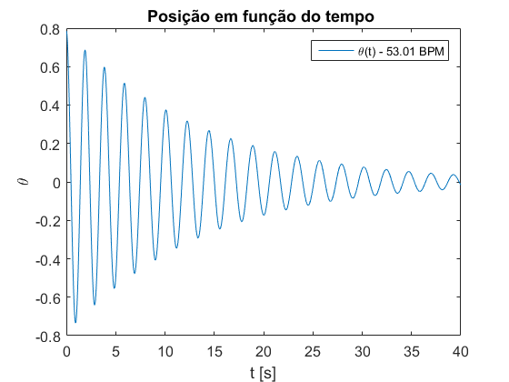 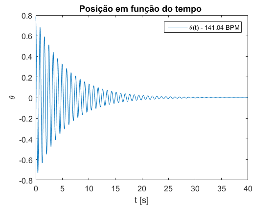 Pergunta 11
Nesta questão foi modificado o diagrama anterior, por forma a simular a existência de um mecanismo de relojoaria no metrónomo que impulsiona durante breves instantes o pêndulo quando este passa na vertical.
Para este efeito, utilizou-se um bloco 'Switch' para que se 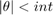, se aplique um binário externo cujo o valor é 7 vezes superior à força de atrito aplicada, de forma a contrariar a mesma e a evitar o decaimento natural para zero da amplitude das oscilações.
open('sim11');
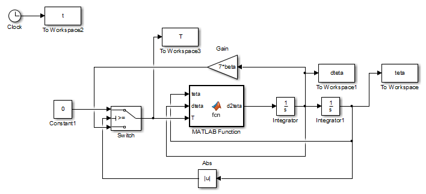 close all clear L=0.25; M=0.1; k=0.35; g=9.8; beta=0.001; dteta_inicial=0; teta_inicial=pi/4; int=0.1; i=1; m=0.0799; %Parâmetros estimados na alínea 10 l1=0.2291; l2=0.0951; for l=[l1 l2] sim('sim11',40); [~,locs] = findpeaks(teta); ind_inicial=10; BPM(i)=calc_media_BPM(t,locs,ind_inicial); figure; plot(t,teta); xlabel('t [s]'); ylabel('\theta'); title('Posição em função do tempo '); set(gca,'fontsize',12); legend(sprintf('\\theta(t) - %.2f BPM',BPM(i))); figure; plot(t,T); xlabel('t [s]'); ylabel('T'); title('Binário externo aplicado'); set(gca,'fontsize',12); i=i+1; end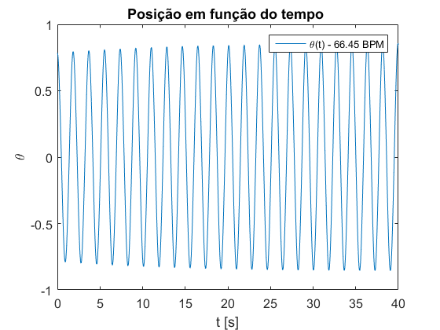 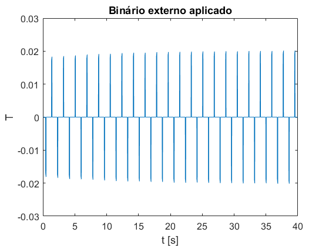 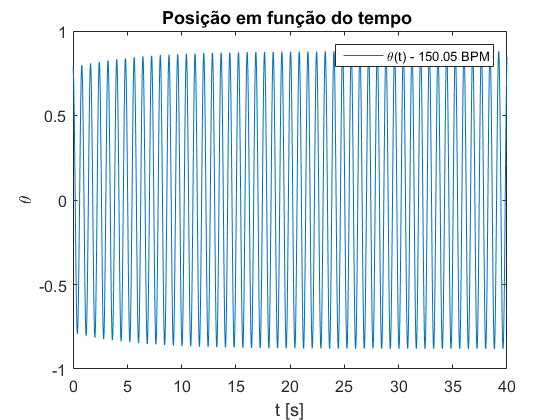 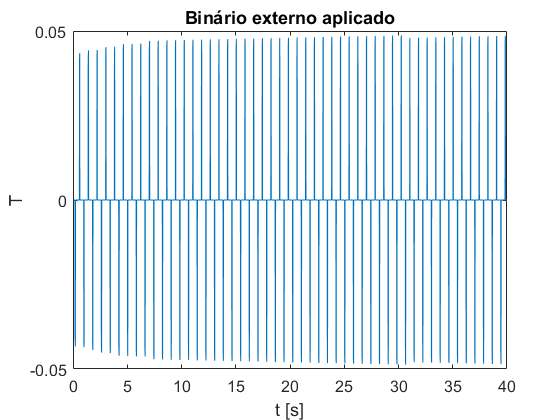
Quando se aplica o binário externo verifica-se uma mudança na frequência de oscilação relativamente à pretendida, principalmente para a frequência mais baixa. Para acertar teria de se considerar o binário externo no dimensionamento de l.
Pergunta 12
clear close all L=0.25; M=0.1; k=0.35; g=9.8; beta=0.001; dteta_inicial=0; teta_inicial=pi/4; m=0.0799; %Parâmetros estimados na questão 9 l1=0.2289; l2=0.0952; for l=[l1 l2] J=(m*l^2)+(M/3)*L^2; G=1/(k-g*(m*l+(1/2)*M*L)); wn=sqrt((k-g*(m*l+(1/2)*M*L))/J); zeta=beta/(2*J*wn); H=tf(G*wn^2,[1 2*zeta*wn wn^2]); w = linspace(10e-2,10e2,10e5); figure(1); h=bodeplot(H,w); hold on; end p = getoptions(h); p.YLim{1}=[-40 60]; setoptions(h,p); figure(1); legend('53 BPM','141 BPM');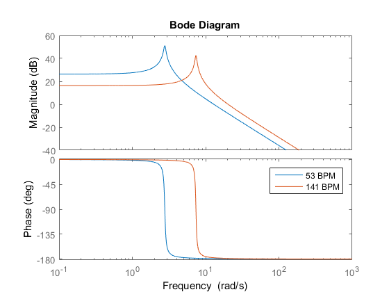
Os diagramas de bode obtidos para as duas posições da massa são semelhantes, as principais diferenças prendem-se com o facto do "pico" da amplitude ocorrer na frequência de oscilação 53 BPM para l=0.2289 e em 141 BPM para l=0.0952 e que para a menor frequência obtém-se um maior ganho de amplitude.
O dispositivo que poderia fornecer a este sistema mecânico o tipo de entrada subjacente ao diagrama de Bode é um filtro passa-baixo com um pólo duplo, pois a partir da frequência de corte a amplitude do diagrama diminui 40 dB/dec.
Pergunta 13
Para esta questão foi criado um diagrama de blocos em Simulink, onde se aplica um binário externo sinusoidal com frequência ajustável e à saída do bloco da função de transferência do sistema linear temos o valor de .
open('sim13');
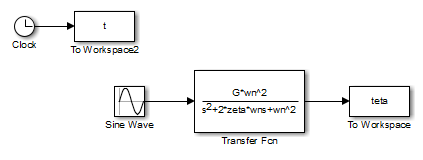 clear close all L=0.25; M=0.1; k=0.35; g=9.8; beta=0.001; dteta_inicial=0; teta_inicial=pi/4; m=0.0799; l=0.2289; i=1; J=(m*l^2)+(M/3)*L^2; G=1/(k-g*(m*l+(1/2)*M*L)); wn=sqrt((k-g*(m*l+(1/2)*M*L))/J); zeta=beta/(2*J*wn); %testa-se para as frequências angulares entre 2 e 3 rad/s w_teste_set=2:0.01:3; for i=1:length(w_teste_set) w_teste=w_teste_set(i); sim('sim13',50); %Obtém-se o valor máximo de cada gráfico obtido amp(i)=max(teta); end %Encontra-se a frequência para a qual teta apresenta maior amplitude [~,ind]=max(amp); %Obtém-se wn w_esc=w_teste_set(ind); %Calcula-se a massa com o valor de wn m_calc=(k-J*w_esc^2-g*(1/2)*M*L)/(g*l); fprintf('massa real: %.4f \nmassa estimada: %.4f\n',m,m_calc);
massa real: 0.0799 massa estimada: 0.0800
A descrição da estratégia da medição da massa encontra-se no documento 'QuestoesTeoricas-Lab3-Grupo16.pdf'.